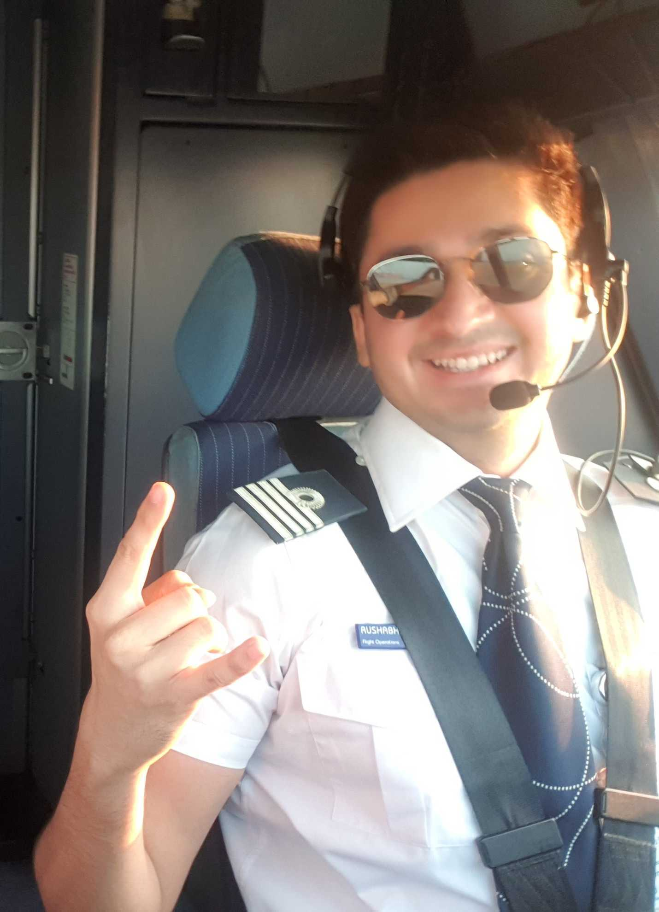
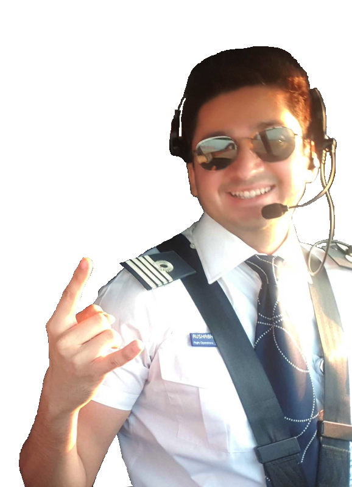
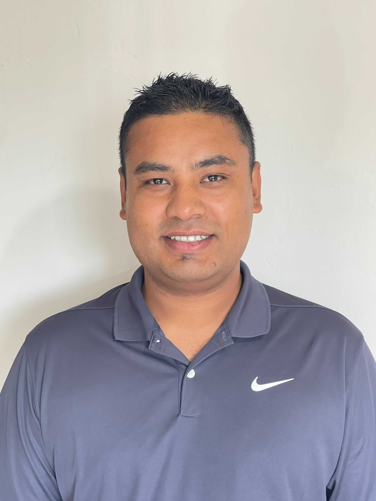
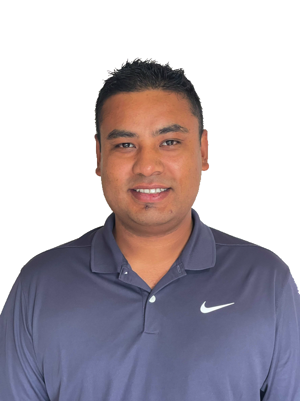

Soni
 
LinkedIn
GitHub
I'm Rushabh Soni, an airline captain for over 11 years now and associated with the aerospace industry for over 15 years.
Always believed computers are the future. As civilisation progresses towards a more automated world, computers and software are going to be at the forefront. The possibilities are literally endless with what can be done with software, added to the positive impact that can be made on everyday life for one and all.
Having spent over a decade and a half in a high skill, high risk industry where timely decision making is of utmost importance I hope to bring all of these valuable past experiences along with my thirst for knowledge and the need for constant innovation/self improvement into my new career.
Abdi


My name is Abdi Mohamed, and I am from Eden Prairie, MN. My background is in Aerospace industry and my work
focuses on the manufacturing management side of the industry. I decided to change my career field and become a
Software Developer so I can use my strong teamwork, organizational, communication, and leadership skills that I
have acquired during my service in the military and managing diverse teams in the Aerospace industry.
Joining
code fellows was the first step in my journey of becoming a Software Developer, and it gives me the opportunity
to learn the skills and tools that are required to succeed in this field. I will continue to grow my knowledge
and skill-set in coding to achieve my goal of becoming a full-stack Software Developer. I intend on using this
knowledge to create applications that solve everyday problems.
Brandon


LinkedIn
GitHub
Personal Website
I am Brandon Rimes, dynamic autodidact and abstract intellectual.
My experience is variegated with professional and recreational endeavors.
My intention is to apply and advance my computer programming repertoire, creating clean, concise, commented
code. I get excited about planet-positive projects that improve our lives and environment (ex. automated
reforestation) as well as exquisite user experience web design.
I enjoy being immersed in nature, gardening, playing various musical instruments, creating ornate objects
(furniture, art, tools, etc.), traveling, learning, teaching, connecting with and helping people, and sharing
these things with my fellow humans.
Abinash
 
LinkedIn
GitHub
Experienced Electrical Engineer with a demonstrated history of working in the Defense & Space industry. Skilled in Communication, Supervisory Skills, Strategic Thinking, Leadership, and Delegation. Strong engineering professional with a Bachelor's degree focused in Electrical and Electronics Engineering from McNeese State University.
Stuff and things about me Humblebrag brooklyn before they sold out tote bag, pour-over cliche trust fund kogi food truck dreamcatcher typewriter art party try-hard kombucha. Put a bird on it letterpress poutine jianbing crucifix austin master cleanse literally direct trade chartreuse umami subway tile. Fixie tumblr migas semiotics, lomo mixtape wayfarers leggings lyft whatever. PBR&B pickled gastropub, ethical cronut tousled hot chicken bushwick kombucha. Migas vaporware green juice disrupt neutra.